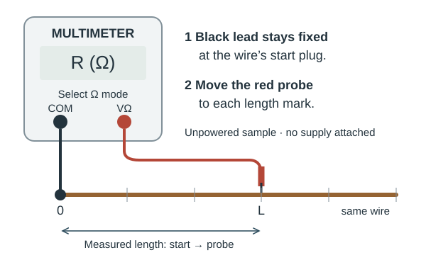
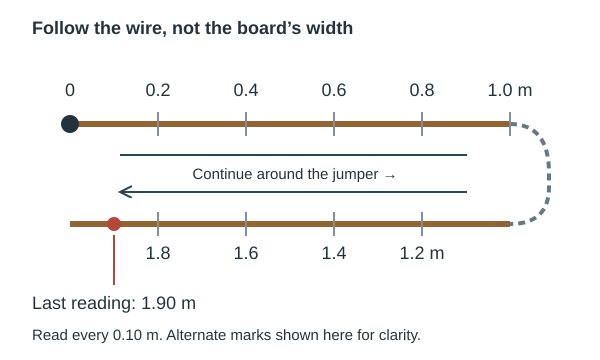
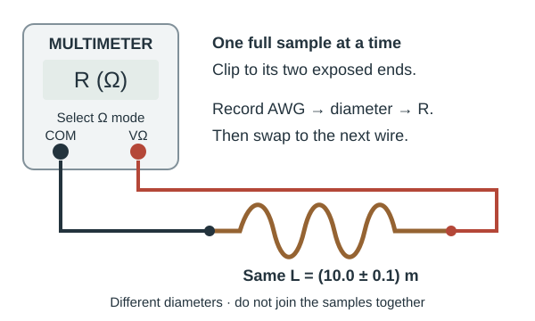
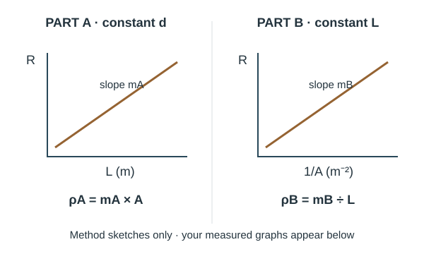

PHYS 210 / EXPERIMENT 7
Resistivity of Nichrome Wire
Work through the experiment, enter your measurements, and build your lab report.
01 / SET UP
Start your lab report
Source: PHYS 210 Lab Manual Complete 2024, L7-1–L7-4 (PDF pages 101–104). Use the supplied apparatus and your instructor’s uncertainty conventions.
Objectives and theory
Test resistance versus length at constant diameter, then resistance versus inverse area at constant length. Determine resistivity independently from each graph.
Part A: slope of R vs L = ρ/A, so ρA = slope × A.
Part B: slope of R vs 1/A = ρL, so ρB = slope ÷ L.
This tool uses conservative first-order sums: ΔA/A = 2Δd/d; ΔρA/ρA = ΔmA/mA + ΔA/A; ΔρB/ρB = ΔmB/mB + ΔL/L. Slope uncertainty is (maximum − minimum)/2, as in the manual. Values stay blank until you enter them; zero uncertainty must be entered explicitly.
02 / MEASURE PART A
One wire, nineteen lengths
- Connect black COM to the prepared #28 AWG wire’s end plug. Put the red lead in VΩ and select Ω. Disconnect the sample from external power.
- Press the probe at 10, 20, …, 100 cm, then 110, …, 190 cm on the return side. The jumper is assumed to have negligible resistance.
- Record R and its uncertainty at each mark. If contact is unstable, the manual suggests lightly sanding the oxide layer.


Nominal conversion: d (mm) = 0.127 × 92^((36 − AWG)/39). Verify with the manual’s chart. This does not supply a measured uncertainty.
| Point | L (m) | ΔL (m) | R (Ω) | ΔR (Ω) |
|---|
03 / MEASURE PART B
Equal lengths, different wire sizes
Measure the resistance between the exposed ends of each supplied #20–#30 AWG sample. Enter the gauges actually provided. Convert their chart diameters to millimetres here; the tool converts them to metres for calculations.

The manual specifies L = (10.0 ± 0.1) m. Change these if your instructor supplies different values.
| Wire | AWG | d (mm) | Δd (mm) | R (Ω) | ΔR (Ω) |
|---|
04 / CALCULATE
From measurements to resistivity
Best-fit lines use ordinary least squares with a free intercept. Error bars show the uncertainties you entered. A minimum of three valid points with distinct horizontal positions is needed for each fit.

Choose slope limits
Use your instructor’s maximum/minimum line method or the Excel template. The optional suggestions find positive slopes that can pass through every uncertainty rectangle. They are not statistical confidence intervals. If no such line exists, review readings, uncertainties and the linear model; do not enlarge uncertainties just to obtain agreement.
05 / DISCUSS
Explain what the results show
06 / REPORT & EXPORT
Review your report
Excel includes raw inputs, editable formulas and native scatter charts with error bars and fitted trendlines. The Word report includes the setup diagrams, current results, graphs and your written discussion. Incomplete work exports as a clearly labelled draft. Nothing is submitted to D2L.